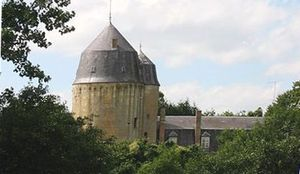
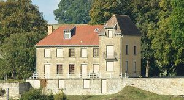

Recensement Jean-Claude Truffet
| Département | 08 — Ardennes |
| Canton | Attigny |
| Commune | Day |
| Type d'édifice | Château |
| Période d'origine | XIII-XVIII |
| Coordonnées GPS | 49° 30' 56" Nord, 4° 59' 05" Est Donjon de Day grav-2 GPS : 49° 30' 16,51" Nord, 4° 40' 46,55" Est |


Deux châteaux dans cet article Day et Mont-de-Jeux NEUVILLE-DAY, la construction date de 1770. Le donjon de Day, La tradition veut que cette demeure fortifiée ait été construite à partir de l'an 1243, par Sigebaud, seigneur de Day, compagnon d'armes du roi Saint-Louis lors de sa première croisade. Le 25/12/1390, un ouragan endommage le château de Neuville-Day. Les Bohan héritent du château vers 1430, le remettent en état et le conservent durant 200 ans. Les armes qui figurent sur la cheminée du 2ème étage du donjon sont celles de Gobert de Bohan et Isabeau de Ligneville, mariés en 1498. Au XVIIe siècle, la seigneurie devint la propriété du maréchal de Schulemberg. Un passage souterrain permettrait de communiquer entre ce château et celui du maréchal de France, à Mont-de-Jeux. Un départ voûté fut découvert. Le maréchal de Schulemberg le transmit à Marie d'Estoquoy. Le château devint ensuite la propriété des comtes d'Ancelet. Il subira un incendie au XVIIIe siècle qui détruisit une bonne partie de ses bâtiments. Le vicomte d'Ancelet le vendit en 1828 à la famille Guilly. En 1868, il sera revendu à Jean-Baptiste Capitaine, aubergiste à Vaux-Montreuil, et devint la propriété de Louis Gilles, son gendre. Le docteur Charles Gilles, fils du précédent et médecin de Rosa Bonheur, y aménage. Sa veuve procède à sa mort à des fouilles désordonnées, à la recherche d'un éventuel trésor. Deux légendes sont liées au château du donjon de Day : la première légende raconte que Fodebert, seigneur du lieu, y emprisonna sa nièce Régina, dans un cachot, sous la petite tour, tandis que son fiancé, Ingebrand, était en croisade.
DAY suite, Le fourbe Fodebert proposa à Régina d'épouser son fils, sans succès. A son retour de Terre sainte, Ingebrand provoqua en combat le cruel Fodebert, qui fut battu, libéra Régina sa bien-aimée et fit périr son adversaire, dans d'horribles supplices. L'âme de Fodebert, depuis, errerait la nuit au sommet de la tourelle. La seconde légende raconte que Bucelin, seigneur de Day, fou de jalousie, construisit le donjon pour y enfermer son épouse. Il la soupçonnait en effet d'aimer un seigneur voisin. Elle y mourut sept ans après, selon les uns, trente ans après, selon les autres. Cette légende semble en fait s'inspirer d'un fait divers du pays : en 1579, François de Wignacourt, seigneur de Montgon, avait assassiné sa femme Nicole de Villers par jalousie. Une plaque dans l'église de Montgon en témoigne encore. La seigneurie de Montgon, comme celle de Neuville-Day, appartenait aux Bohan. Les vestiges du château sont restaurés par M. Fabrega, propriétaire depuis 1984. Le donjon de Day est inscrit aux M.H. depuis le 9/06/1987. le donjon est accollé d'une tourelle sur son flanc, escalier à vis déservant les trois niveaux. MONT de JEUX, fut construit vers 1660 par le maréchal de France Schulemberg. Jean de Schulemberg, comte de Mont-de-jeu, militaire, fut lieutenant général de l'Artois. Né en 1597, il mourut en 1671. Sans descendance directe, ses neveux le vendirent en 1767. La première guerre mondiale endommagea le château puis il fut entièrement détruit par l'artillerie française en mai 1940 et reconstruit en 1959. Le portail, de la fin du XVIIIe siècle, est situé dans le bâtiment nord construit en 1857. La famille d'Achon, héritière aujourd'hui du domaine, utilise la chapelle comme lieu de sépulture. Éléments protégés MH : le portail ; les façades nord et sud ; la voûte avec le passage voûté sur croisées d'ogives et la toiture: inscription par arrêté du 14 février 1995.
Day- Maréchal de Schulemberg Famille Guilly. Et de Bohan"
Neuville GPS : 49° 30' 56" Nord, 4° 59' 05" Est Donjon de Day grav-2 GPS : 49° 30' 16,51" Nord, 4° 40' 46,55" Est